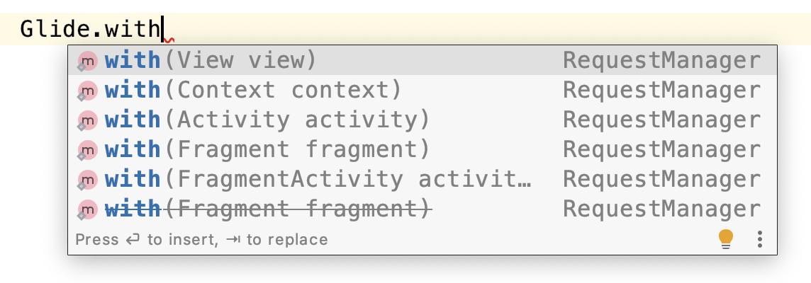

一、前言
1.基本加载流程
下面是Glide最简单的加载图片的方式：
1 2 3 Glide.with(Context) .load(url) .into(imageView);
虽然只有简单一句话，但是按照官方的说法，背后有成吨的代码来实现。接下来会对这行代码进行具体的梳理，来看看Glide是如何加载一张图片的。
二、加载流程解析
1.with( )方法
1）With
with()方法有6个重载，可以传入Activity、Fragment或者Context，虽然传入的参数不同，但都是获取上下文来调用getRetriever()方法返回一个RequestManagerRetriever对象。
1 2 3 4 5 6 7 8 9 10 11 @NonNull private static RequestManagerRetriever getRetriever(@Nullable Context context) { // Context could be null for other reasons (ie the user passes in null), but in practice it will // only occur due to errors with the Fragment lifecycle. Preconditions.checkNotNull( context, "You cannot start a load on a not yet attached View or a Fragment where getActivity() " + "returns null (which usually occurs when getActivity() is called before the Fragment " + "is attached or after the Fragment is destroyed)."); return Glide.get(context).getRequestManagerRetriever(); }
先对Context进行非空检查，然后在getRetriever方法中调用get方法构建一个Glide单例，使用双重检查锁确保Glide只进行一次初始化。get方法最终会调用initializeGlide(Context context, GlideBuilder builder, GeneratedAppGlideModule annotationGeneratedModule)方法。
1 2 3 4 5 6 7 8 9 10 11 12 13 14 15 16 17 18 19 20 /** * Get the singleton. * * @return the singleton */ @NonNull // Double checked locking is safe here. @SuppressWarnings("GuardedBy") public static Glide get(@NonNull Context context) { if (glide == null) { GeneratedAppGlideModule annotationGeneratedModule = getAnnotationGeneratedGlideModules(context.getApplicationContext()); synchronized (Glide.class) { if (glide == null) { checkAndInitializeGlide(context, annotationGeneratedModule); } } } return glide; }
2）GlideModule
上面的GeneratedAppGlideModule对象是由getAnnotationGeneratedGlideModules(con-text.getApplicationContext())方法获取Glide注解生成的GlideModule。
1 2 3 4 5 6 7 8 9 10 11 private static GeneratedAppGlideModule getAnnotationGeneratedGlideModules(Context context) { GeneratedAppGlideModule result = null; ... Class<GeneratedAppGlideModule> clazz = (Class<GeneratedAppGlideModule>) Class.forName("com.bumptech.glide.GeneratedAppGlideModuleImpl"); result = clazz.getDeclaredConstructor(Context.class) .newInstance(context.getApplicationContext()); ... return result; }
这是在Glide 4.x中提供的配置模式，使用@GlideModule注解进行标记，而在Glide 3.x中，是需要在AndroidManifest.xml中指定一个继承自GlideModule的自定义类。获取到的GeneratedAppGli-deModule对象会作为参数传递到initializeGlide()方法中。
1 2 3 4 5 6 7 8 9 10 11 12 13 14 15 16 17 18 19 20 21 22 23 24 25 26 27 28 29 30 31 32 33 private static void initializeGlide( @NonNull Context context, @NonNull GlideBuilder builder, @Nullable GeneratedAppGlideModule annotationGeneratedModule) { Context applicationContext = context.getApplicationContext(); List<com.bumptech.glide.module.GlideModule> manifestModules = Collections.emptyList(); //如果注解生成的Module为空或者可配置的mainfest标志为true， //则获取manifest里面的GlideModule模块 if (annotationGeneratedModule == null || annotationGeneratedModule.isManifestParsingEnabled()) { manifestModules = new ManifestParser(applicationContext).parse(); } //如果注解生成的Module和通过反射annotationGeneratedModule拿到的Module都不为空， //那就过滤Manifest中的Module if (annotationGeneratedModule != null && !annotationGeneratedModule.getExcludedModuleClasses().isEmpty()) { ······ } ······ //初始化RequestManager并赋值给GlideBuilder RequestManagerRetriever.RequestManagerFactory factory = annotationGeneratedModule != null ? annotationGeneratedModule.getRequestManagerFactory() : null; builder.setRequestManagerFactory(factory); ······ //初始化各种配置 Glide glide = builder.build(applicationContext); //注册Application生命周期监听 applicationContext.registerComponentCallbacks(glide); Glide.glide = glide; }
3）Build
GlideBuilder.build()方法创建了各种线程池和缓存池。
1 2 3 4 5 6 7 8 9 10 11 12 13 14 15 16 17 18 19 20 21 22 23 24 25 26 27 28 29 30 31 32 33 34 35 36 37 38 39 40 41 42 43 44 45 46 47 48 49 50 51 52 53 54 55 56 57 58 59 60 61 62 63 64 65 66 67 68 69 70 71 72 73 74 75 76 77 78 79 80 81 82 83 @NonNull Glide build(@NonNull Context context) { //创建请求图片线程池 if (sourceExecutor == null) { sourceExecutor = GlideExecutor.newSourceExecutor(); } //创建硬盘缓存线程池 if (diskCacheExecutor == null) { diskCacheExecutor = GlideExecutor.newDiskCacheExecutor(); } //创建动画线程池 if (animationExecutor == null) { animationExecutor = GlideExecutor.newAnimationExecutor(); } //计算需要设置的缓存大小 if (memorySizeCalculator == null) { memorySizeCalculator = new MemorySizeCalculator.Builder(context).build(); } if (connectivityMonitorFactory == null) { connectivityMonitorFactory = new DefaultConnectivityMonitorFactory(); } if (bitmapPool == null) { //根据设备的屏幕密度和尺寸，获取当前设备推荐的bitmap池大小 int size = memorySizeCalculator.getBitmapPoolSize(); if (size > 0) { //创建图片线程池缓存Lru bitmapPool = new LruBitmapPool(size); } else { bitmapPool = new BitmapPoolAdapter(); } } //创建对象数组池缓存 if (arrayPool == null) { arrayPool = new LruArrayPool(memorySizeCalculator.getArrayPoolSizeInBytes()); } //创建内存缓存 if (memoryCache == null) { memoryCache = new LruResourceCache(memorySizeCalculator.getMemoryCacheSize()); } if (diskCacheFactory == null) { diskCacheFactory = new InternalCacheDiskCacheFactory(context); } if (engine == null) { engine = new Engine( memoryCache, diskCacheFactory, diskCacheExecutor, sourceExecutor, GlideExecutor.newUnlimitedSourceExecutor(), animationExecutor, isActiveResourceRetentionAllowed); } if (defaultRequestListeners == null) { defaultRequestListeners = Collections.emptyList(); } else { defaultRequestListeners = Collections.unmodifiableList(defaultRequestListeners); } GlideExperiments experiments = glideExperimentsBuilder.build(); RequestManagerRetriever requestManagerRetriever = new RequestManagerRetriever(requestManagerFactory, experiments); return new Glide( context, engine, memoryCache, bitmapPool, arrayPool, requestManagerRetriever, connectivityMonitorFactory, logLevel, defaultRequestOptionsFactory, defaultTransitionOptions, defaultRequestListeners, experiments); }
4）RequestManagerRetriever#get
在RequestManagerRetriever的get方法中，对不同的Context对象做了不同的处理。主要分为Application类型的Context和非Application类型的Context。非Application类型中再分为Activity、Fragment、View等类型，对应各自的重载方法。如果Context是Application，或者当前线程是子线程，则会调用getApplicationManager(context)方法，使得Glide请求的生命周期与ApplicationContext的生命周期关联。
1 2 3 4 5 6 7 8 9 10 11 12 13 14 15 16 17 18 19 20 21 22 @NonNull public RequestManager get(@NonNull Context context) { if (context == null) { throw new IllegalArgumentException("You cannot start a load on a null Context"); } else if (Util.isOnMainThread() && !(context instanceof Application)) { //当前线程是主线程，并且context不是Application if (context instanceof FragmentActivity) { return get((FragmentActivity) context); } else if (context instanceof Activity) { return get((Activity) context); } else if (context instanceof ContextWrapper // Only unwrap a ContextWrapper if the baseContext has a non-null application context. // Context#createPackageContext may return a Context without an Application instance, // in which case a ContextWrapper may be used to attach one. && ((ContextWrapper) context).getBaseContext().getApplicationContext() != null) { return get(((ContextWrapper) context).getBaseContext()); } } //context是Application，则将请求与ApplicationLifecycle关联 //生命周期跟随Application return getApplicationManager(context); }
当传入的Context是Fragment或者FargmentActivity时，会调用get的重载方法，执行supportFragmentGet()方法，在当前页面添加一个SupportRequestManagerFragment；同理当传入的Context为Activity时候，执行fragmentGet()方法，在当前页面添加一个RequestManager-Fragment。当传入的Conetext类型是View时，判断View所在的内容是Activity还是Fragment，再分别调用对应的get()方法。
1 2 3 4 5 6 7 8 9 10 11 12 13 14 15 16 17 @SuppressWarnings("deprecation") @NonNull public RequestManager get(@NonNull Activity activity) { //判断当前是否在子线程中请求任务 if (Util.isOnBackgroundThread()) { //通过 Application 级别的 Context 加载 return get(activity.getApplicationContext()); } else { //检查 Activity 是否已经销毁 assertNotDestroyed(activity); //拿到当前 Activity 的 FragmentManager android.app.FragmentManager fm = activity.getFragmentManager(); //主要是生成一个 Fragment 然后绑定一个请求管理 RequestManager return fragmentGet( activity, fm, /*parentHint=*/ null, isActivityVisible(activity)); } }
下面的代码示例以getSupportRequestManagerFragment为例子，这里需要注意的是，下面的两处current判空处理，实际上确保在一个Activity中只添加一个SupportRequestManager-Fragment，其中的pendingSupportRequestManagerFragments是一个HashMap，用于临时保存SupportRequestManagerFragment的映射关系。因为commitAllowingStateLosss()方法只是将事物添加到消息队列中，这是一个异步处理方法，最终还需要Handler执行消息将其真正添加到FragmentManager中，如果此时又执行了get()方法创建SupportRequestManagerFragment，可能会导致创建多个，所以通过pendingSupportRequestManagerFragments来添加临时映射以避免这种情况产生。最后发送的ID_REMOVE_SUPPORT_FRAGMENT_MANAGER消息，实际上就是移除pendingSupportRequest-ManagerFragments中的映射关系，根据Handler的消息机制，当ID_REMOVE_SUPPORT_FRAGMEN-T_MANAGER消息执行完成时，SupportRequestManagerFragment也已经添加成功了。
1 2 3 4 5 6 7 8 9 10 11 12 13 14 15 16 17 18 19 20 21 22 23 24 25 @NonNull private SupportRequestManagerFragment getSupportRequestManagerFragment( @NonNull final FragmentManager fm, @Nullable Fragment parentHint) { //尝试获取TAG为FRAGMENT_TAG的SupportRequestManagerFragment SupportRequestManagerFragment current = (SupportRequestManagerFragment) fm.findFragmentByTag(FRAGMENT_TAG); if (current == null) { //如果current为空，则从pendingSupportRequestManagerFragments中尝试获取一个临时的 //SupportRequestManagerFragment对象 current = pendingSupportRequestManagerFragments.get(fm); if (current == null) { //若current为空，则实例化一个SupportRequestManagerFragment，并临时添加 //映射关系在pendingSupportRequestManagerFragments中 current = new SupportRequestManagerFragment(); current.setParentFragmentHint(parentHint); pendingSupportRequestManagerFragments.put(fm, current); //添加到handler队列 fm.beginTransaction().add(current, FRAGMENT_TAG).commitAllowingStateLoss(); //发送一个handler消息，此消息执行后会remove掉pendingSupportRequestManagerFragments中 //SupportRequestManagerFragment的临时映射关系，意味着此时SupportRequestManagerFragment已成功创建 handler.obtainMessage(ID_REMOVE_SUPPORT_FRAGMENT_MANAGER, fm).sendToTarget(); } } return current; }
这里的SupportRequestManagerFragment和RequestManagerFragment都是无界Fragment。因为Fragment生命周期跟随Activity，当Activity销毁时，Fragment也会跟着销毁。这里利用添加Fragment的方法与RequestManager绑定在一起，用于监听生命周期。
5）RequestManagerFragment
在RequestManagerFragment持有一个lifecycle，在Fragment进入相应的生命周期的时候，会通知lifecycle执行相关方法。
1 2 3 4 5 6 7 8 9 10 11 12 13 14 15 16 17 18 19 20 21 22 public class RequestManagerFragment extends Fragment { ... private final ActivityFragmentLifecycle lifecycle; ... @Override public void onStart() { super.onStart(); lifecycle.onStart(); } @Override public void onStop() { super.onStop(); lifecycle.onStop(); } @Override public void onDestroy() { super.onDestroy(); lifecycle.onDestroy(); } }
6）with小结
Glide初始化各种配置信息（缓存、请求线程池等）
将glide请求与application、无界Fragment进行绑定，通过lifecycle来监听相关的生命周期。
无界Fragment在创建过程中通过HashMap添加临时映射关系和通过Handler消息机制，来确保一个Activity只持有一个无界Fragment。
2.load( )方法
1）RequestManager#load
load()有多个重载方法，返回类型是RequestBuilder对象。
1 2 3 4 5 6 7 //RequestManager的load的重载方法 @NonNull @CheckResult @Override public RequestBuilder<Drawable> load(@Nullable Bitmap bitmap) { return asDrawable().load(bitmap); }
2）RequestManager#asDrawable
在asDrawable()方法中，继续调用了as(Drawable.class)方法，在as方法中，调用了RequestBuilder的构造方法。
1 2 3 4 5 6 7 8 9 10 11 12 @NonNull @CheckResult public RequestBuilder<Drawable> asDrawable() { return as(Drawable.class); } @NonNull @CheckResult public <ResourceType> RequestBuilder<ResourceType> as( @NonNull Class<ResourceType> resourceClass) { return new RequestBuilder<>(glide, this, resourceClass, context); }
但不管调用哪个重载方法，最终都会调用RequestBuilder的load方法，load方法会调用的loadGeneric方法，会将传入的对象看成object对象，并赋值给model对象，将isModelSet设置为true。这里还注意到一个apply(@NonNull BaseRequestOptions<?> requestOptions)方法，前面提到的GlideBuilder的构造方法中用到的RequestOptionsFactory对象参数就是由RequestOptions构造的，用于配制缓存、占位符等等。
1 2 3 4 5 6 7 8 9 10 11 12 13 14 15 16 17 @NonNull @CheckResult @Override public RequestBuilder<TranscodeType> load(@Nullable Bitmap bitmap) { return loadGeneric(bitmap).apply(diskCacheStrategyOf(DiskCacheStrategy.NONE)); } @NonNull private RequestBuilder<TranscodeType> loadGeneric(@Nullable Object model) { if (isAutoCloneEnabled()) { return clone().loadGeneric(model); } this.model = model; isModelSet = true; return selfOrThrowIfLocked(); }
3）load小结
可以发现到目前为止还没有真正的涉及加载的部分，load部分的代码只是将要加载的内容赋值给了model对象，接下来我们看看真正的加载部分into的解析。
3.into( )方法
1）RequestBuilder#into
1 2 3 4 5 6 7 8 9 10 11 12 13 14 15 16 17 18 19 20 21 22 23 24 25 26 27 28 29 30 31 32 33 34 35 36 37 38 39 40 41 @NonNull public ViewTarget<ImageView, TranscodeType> into(@NonNull ImageView view) { Util.assertMainThread(); Preconditions.checkNotNull(view); BaseRequestOptions<?> requestOptions = this; if (!requestOptions.isTransformationSet() && requestOptions.isTransformationAllowed() && view.getScaleType() != null) { // Clone in this method so that if we use this RequestBuilder to load into a View and then // into a different target, we don't retain the transformation applied based on the previous // View's scale type. //如果在 xml ImageView 节点中没有设置scaleType,那么默认在构造函数中进行了初始化为ScaleType.FIT_CENTER switch (view.getScaleType()) { case CENTER_CROP: requestOptions = requestOptions.clone().optionalCenterCrop(); break; case CENTER_INSIDE: requestOptions = requestOptions.clone().optionalCenterInside(); break; case FIT_CENTER: case FIT_START: case FIT_END: requestOptions = requestOptions.clone().optionalFitCenter(); break; case FIT_XY: requestOptions = requestOptions.clone().optionalCenterInside(); break; case CENTER: case MATRIX: default: // Do nothing. } } return into( glideContext.buildImageViewTarget(view, transcodeClass), /*targetListener=*/ null, requestOptions, Executors.mainThreadExecutor()); }
RequestBuilder的into方法先获取了传递进来的ImageView的ScaleType，Glide会在requestOptions中实现自己的Scale使得最后呈现的图片与ImageView的scaleType保持一致。接下来调用into重载继续构建，所以我们看一下buildImageViewTarget方法。
2）buildImageViewTarget
1 2 3 4 5 6 7 8 9 10 11 12 13 14 15 16 17 18 @NonNull public <X> ViewTarget<ImageView, X> buildImageViewTarget( @NonNull ImageView imageView, @NonNull Class<X> transcodeClass) { return imageViewTargetFactory.buildTarget(imageView, transcodeClass); } @NonNull public <Z> ViewTarget<ImageView, Z> buildTarget( @NonNull ImageView view, @NonNull Class<Z> clazz) { if (Bitmap.class.equals(clazz)) { return (ViewTarget<ImageView, Z>) new BitmapImageViewTarget(view); } else if (Drawable.class.isAssignableFrom(clazz)) { return (ViewTarget<ImageView, Z>) new DrawableImageViewTarget(view); } else { throw new IllegalArgumentException( "Unhandled class: " + clazz + ", try .as*(Class).transcode(ResourceTranscoder)"); } }
buildTarget方法返回了两种类型的ViewTarget，一种是BitmapImageViewTarget，一种是DrawableImageViewTarget，可以看到buildTarget方法的clazz参数只能是Bitmap或Drawable，否则会抛出异常。
3）DrawableImageViewTarget
由于之前RequestBuilder中as方法传入的是Drawable.class，所以我们先关注DrawableImageViewTarget对象。
1 2 3 4 5 6 7 8 9 10 11 12 13 14 15 16 17 public class DrawableImageViewTarget extends ImageViewTarget<Drawable> { public DrawableImageViewTarget(ImageView view) { super(view); } @SuppressWarnings({"unused", "deprecation"}) @Deprecated public DrawableImageViewTarget(ImageView view, boolean waitForLayout) { super(view, waitForLayout); } @Override protected void setResource(@Nullable Drawable resource) { view.setImageDrawable(resource); } }
从上面代码可以知道DrawableImageViewTarget继承的是ImageViewTarget重写的setResource函数，实现了显示Drawable图片的方法。下面我们重新回到into方法上去。
4）RequestBuilder#into
1 2 3 4 5 6 7 8 9 10 11 12 13 14 15 16 17 18 19 20 21 22 23 24 25 26 27 28 29 30 31 32 33 34 35 36 37 private <Y extends Target<TranscodeType>> Y into( @NonNull Y target, @Nullable RequestListener<TranscodeType> targetListener, BaseRequestOptions<?> options, Executor callbackExecutor) { Preconditions.checkNotNull(target); if (!isModelSet) { throw new IllegalArgumentException("You must call #load() before calling #into()"); } //生成一个Glide request请求 Request request = buildRequest(target, targetListener, options, callbackExecutor); Request previous = target.getRequest(); if (request.isEquivalentTo(previous) && !isSkipMemoryCacheWithCompletePreviousRequest(options, previous)) { // If the request is completed, beginning again will ensure the result is re-delivered, // triggering RequestListeners and Targets. If the request is failed, beginning again will // restart the request, giving it another chance to complete. If the request is already // running, we can let it continue running without interruption. if (!Preconditions.checkNotNull(previous).isRunning()) { // Use the previous request rather than the new one to allow for optimizations like skipping // setting placeholders, tracking and un-tracking Targets, and obtaining View dimensions // that are done in the individual Request. previous.begin(); } return target; } //清理掉目标请求管理 requestManager.clear(target); //重新为目标设置一request请求 target.setRequest(request); //将构建出来的request交给RequestManager的track方法来执行 requestManager.track(target, request); return target; }
上面的代码首先通过buildRequest方法，构建出request请求，然后将request请求交给RequestManager的track方法来执行。接下来我们看一下buildRequest是如何构造request请求的。
5）RequestBuilder#buildRequest
1 2 3 4 5 6 7 8 9 10 11 12 13 14 15 16 17 private Request buildRequest( Target<TranscodeType> target, @Nullable RequestListener<TranscodeType> targetListener, BaseRequestOptions<?> requestOptions, Executor callbackExecutor) { return buildRequestRecursive( /*requestLock=*/ new Object(), target, targetListener, /*parentCoordinator=*/ null, transitionOptions, requestOptions.getPriority(), requestOptions.getOverrideWidth(), requestOptions.getOverrideHeight(), requestOptions, callbackExecutor); }
在buildRequest方法中，可以看到buildRequest调用了buildRequestRecursive方法，buildRequestRecursive中大部分代码都在处理缩略图，但这不是最终调用的地方，然后继续跟随下去发现buildRequestRecursive又调用了obtainRequest方法，obtainRequest中传入了上一步提到的target对象，以及图片尺寸的overrideWidth、overrideHeight，和RequestOptions参数。obtainRequest最终都会把参数传递到SingleRequest.obtain中去，所以最终是SingleRequest类来构建请求。SingleRequest中实现了Request接口，实现了begin、clear、pause等方法，这里我们先暂时放一下，后续再来看这个Request接口。
1 2 3 4 5 6 7 8 9 10 11 12 13 14 15 16 17 18 public interface Request { void begin(); void clear(); void pause(); boolean isRunning(); boolean isComplete(); boolean isCleared(); boolean isAnyResourceSet(); boolean isEquivalentTo(Request other); }
6）RequestBuilder#track
下面我们来看track函数的执行。
1 2 3 4 5 6 7 8 9 10 11 12 13 14 15 16 17 18 19 20 21 //这里对当前 class 加了一个同步锁避免线程引起的安全性 synchronized void track(@NonNull Target<?> target, @NonNull Request request) { //添加一个任务 targetTracker.track(target); //执行 Glide request requestTracker.runRequest(request); } public void runRequest(@NonNull Request request) { //添加一个请求 requests.add(request); //是否暂停 if (!isPaused) { //没有暂停，开始调用 Request begin 执行 request.begin(); } else { //如果调用了 暂停，清理请求 request.clear(); pendingRequests.add(request); } }
track方法中执行了RequestTracker类的runRequest方法，用于判断当前Glide是否在暂停状态，不是暂停状态则执行Request的begin方法，否则将这个Request加入到等待队列pendingRequests中，目的是确保不会在开始运行之前或者暂停的时候被垃圾回收。这里的begin方法是前面提到过的Request接口中的方法，其实现类在SingleRequest中，所以接下来我们来看一下SingleRequest中的begin方法。
7）SingleRequest#begin
1 2 3 4 5 6 7 8 9 10 11 12 13 14 15 16 17 18 19 20 21 22 23 24 25 26 27 28 29 30 31 32 33 34 35 36 37 38 39 40 41 42 43 44 45 46 47 48 49 50 51 52 53 54 55 @Override public void begin() { synchronized (requestLock) { assertNotCallingCallbacks(); stateVerifier.throwIfRecycled(); startTime = LogTime.getLogTime(); //model（url）为空 if (model == null) { //检查外部调用的尺寸是否有效 if (Util.isValidDimensions(overrideWidth, overrideHeight)) { width = overrideWidth; height = overrideHeight; } //失败的回调 int logLevel = getFallbackDrawable() == null ? Log.WARN : Log.DEBUG; onLoadFailed(new GlideException("Received null model"), logLevel); return; } if (status == Status.RUNNING) { throw new IllegalArgumentException("Cannot restart a running request"); } if (status == Status.COMPLETE) { //从缓存中找到则直接返回 onResourceReady( resource, DataSource.MEMORY_CACHE, /* isLoadedFromAlternateCacheKey= */ false); return; } // Restarts for requests that are neither complete nor running can be treated as new requests // and can run again from the beginning. cookie = GlideTrace.beginSectionAsync(TAG); status = Status.WAITING_FOR_SIZE; if (Util.isValidDimensions(overrideWidth, overrideHeight)) { //当宽高固定时直接执行onSizeReady，这也是核心方法 onSizeReady(overrideWidth, overrideHeight); } else { //如果宽高没有固定，则通过getSize加载图片的大小尺寸 //最终还是会调用onSizeReady方法 target.getSize(this); } if ((status == Status.RUNNING || status == Status.WAITING_FOR_SIZE) && canNotifyStatusChanged()) { // 预先加载设置的缩略图 target.onLoadStarted(getPlaceholderDrawable()); } if (IS_VERBOSE_LOGGABLE) { logV("finished run method in " + LogTime.getElapsedMillis(startTime)); } } }
从requestManager.track(target,request)开始，最终会执行到SingleRequest#begin()方法的onSizeReady，接下来我们直接看onSizeReady方法。
8）SingleRequest#onSizeReady
1 2 3 4 5 6 7 8 9 10 11 12 13 14 15 16 17 18 19 20 21 22 23 24 25 26 27 28 29 30 31 32 33 34 35 36 37 38 39 40 41 42 43 44 45 46 47 48 49 @Override public void onSizeReady(int width, int height) { stateVerifier.throwIfRecycled(); synchronized (requestLock) { if (IS_VERBOSE_LOGGABLE) { logV("Got onSizeReady in " + LogTime.getElapsedMillis(startTime)); } if (status != Status.WAITING_FOR_SIZE) { return; } status = Status.RUNNING; float sizeMultiplier = requestOptions.getSizeMultiplier(); this.width = maybeApplySizeMultiplier(width, sizeMultiplier); this.height = maybeApplySizeMultiplier(height, sizeMultiplier); if (IS_VERBOSE_LOGGABLE) { logV("finished setup for calling load in " + LogTime.getElapsedMillis(startTime)); } // 根据给定的配置，加载各种对象 loadStatus = engine.load( glideContext, model, requestOptions.getSignature(), this.width, this.height, requestOptions.getResourceClass(), transcodeClass, priority, requestOptions.getDiskCacheStrategy(), requestOptions.getTransformations(), requestOptions.isTransformationRequired(), requestOptions.isScaleOnlyOrNoTransform(), requestOptions.getOptions(), requestOptions.isMemoryCacheable(), requestOptions.getUseUnlimitedSourceGeneratorsPool(), requestOptions.getUseAnimationPool(), requestOptions.getOnlyRetrieveFromCache(), this, callbackExecutor); if (status != Status.RUNNING) { loadStatus = null; } if (IS_VERBOSE_LOGGABLE) { logV("finished onSizeReady in " + LogTime.getElapsedMillis(startTime)); } } }
到了这一步，主要调用了engine.load()方法并返回加载状态。engine主要负责加载、管理活动缓存和内存缓存资源的类。
9）Engine#load
1 2 3 4 5 6 7 8 9 10 11 12 13 14 15 16 17 18 19 20 21 22 23 24 25 26 27 28 29 30 31 32 33 34 35 36 37 38 39 40 41 42 43 44 45 46 47 48 49 50 51 52 53 54 55 56 57 public <R> LoadStatus load( GlideContext glideContext, Object model, Key signature, int width, int height, Class<?> resourceClass, Class<R> transcodeClass, Priority priority, DiskCacheStrategy diskCacheStrategy, Map<Class<?>, Transformation<?>> transformations, boolean isTransformationRequired, boolean isScaleOnlyOrNoTransform, Options options, boolean isMemoryCacheable, boolean useUnlimitedSourceExecutorPool, boolean useAnimationPool, boolean onlyRetrieveFromCache, ResourceCallback cb, Executor callbackExecutor) { long startTime = VERBOSE_IS_LOGGABLE ? LogTime.getLogTime() : 0; //拿到缓存或者请求的 key EngineKey key = keyFactory.buildKey( model, signature, width, height, transformations, resourceClass, transcodeClass, options); //这里用上面计算后的key来获取内存缓存 EngineResource<?> memoryResource; synchronized (this) { memoryResource = loadFromMemory(key, isMemoryCacheable, startTime); //如果内存缓存不存在 if (memoryResource == null) { return waitForExistingOrStartNewJob( glideContext, model, ..... //传入的各种参数 ..... startTime); } } // Avoid calling back while holding the engine lock, doing so makes it easier for callers to // deadlock. cb.onResourceReady( memoryResource, DataSource.MEMORY_CACHE, /* isLoadedFromAlternateCacheKey= */ false); return null; }
load中先根据各种参数来构建key，再接着调用loadFromMemory方法来获取内存缓存，代码如下所示。
1 2 3 4 5 6 7 8 9 10 11 12 13 14 15 16 17 18 19 20 21 22 23 24 25 26 27 @Nullable private EngineResource<?> loadFromMemory( EngineKey key, boolean isMemoryCacheable, long startTime) { if (!isMemoryCacheable) { return null; } EngineResource<?> active = loadFromActiveResources(key); //根据 key 拿到活动缓存中的资源 if (active != null) { if (VERBOSE_IS_LOGGABLE) { logWithTimeAndKey("Loaded resource from active resources", startTime, key); } return active; } //尝试从 LruResourceCache 中找寻这个资源 EngineResource<?> cached = loadFromCache(key); if (cached != null) { if (VERBOSE_IS_LOGGABLE) { logWithTimeAndKey("Loaded resource from cache", startTime, key); } return cached; } return null; }
如果isMemoryCacheable参数为false，则返回为空，这个参数就是BaseRequestOptions中加载图片的时候设置的是否开启缓存来决定的，然后尝试获取ActiveResources（活动缓存，内部是一个弱引用Map）和LruResourceCache（Lru内存缓存）中寻找资源，如果有则对应监听的onResourceReady表示数据准备好了，如果都没有找到则返回为空。当返回为空时，则会进入waitForExistingOrStartNewJob方法。
10）Engine#waitForExistingOrStartNewJob
1 2 3 4 5 6 7 8 9 10 11 12 13 14 15 16 17 18 19 20 21 22 23 24 25 26 27 28 29 30 31 32 33 34 35 36 37 38 39 40 41 42 43 44 45 46 47 48 49 50 51 52 53 54 55 56 57 58 59 60 61 62 63 64 65 66 67 68 69 70 71 private <R> LoadStatus waitForExistingOrStartNewJob( GlideContext glideContext, Object model, Key signature, int width, int height, Class<?> resourceClass, Class<R> transcodeClass, Priority priority, DiskCacheStrategy diskCacheStrategy, Map<Class<?>, Transformation<?>> transformations, boolean isTransformationRequired, boolean isScaleOnlyOrNoTransform, Options options, boolean isMemoryCacheable, boolean useUnlimitedSourceExecutorPool, boolean useAnimationPool, boolean onlyRetrieveFromCache, ResourceCallback cb, Executor callbackExecutor, EngineKey key, long startTime) { //根据 Key 看看缓存中是否正在执行 EngineJob<?> current = jobs.get(key, onlyRetrieveFromCache); if (current != null) { //如果正在执行，把数据回调出去 current.addCallback(cb, callbackExecutor); if (VERBOSE_IS_LOGGABLE) { logWithTimeAndKey("Added to existing load", startTime, key); } return new LoadStatus(cb, current); } //否则则构建新的请求任务 EngineJob<R> engineJob = engineJobFactory.build( key, isMemoryCacheable, useUnlimitedSourceExecutorPool, useAnimationPool, onlyRetrieveFromCache); DecodeJob<R> decodeJob = decodeJobFactory.build( glideContext, model, key, signature, width, height, resourceClass, transcodeClass, priority, diskCacheStrategy, transformations, isTransformationRequired, isScaleOnlyOrNoTransform, onlyRetrieveFromCache, options, engineJob); //把当前需要执行的 key 添加进缓存 jobs.put(key, engineJob); //执行任务的回调 engineJob.addCallback(cb, callbackExecutor); //开始执行 engineJob.start(decodeJob); return new LoadStatus(cb, engineJob); }
首先从执行缓存jobs中查找对应key的任务，如果找到了就说明已经在执行了，就不用重复了。如果没有找到，就会通过engineJob.start开启一个新的请求任务。下面我们看一下engineJob.start方法。
1 2 3 4 5 6 7 public synchronized void start(DecodeJob<R> decodeJob) { this.decodeJob = decodeJob; // Glide执行的线程池 GlideExecutor executor = decodeJob.willDecodeFromCache() ? diskCacheExecutor : getActiveSourceExecutor(); executor.execute(decodeJob); }
通过观察DecodeJob类知道，其实现了Runnable接口。GlideExecutor线程池开始执行就会调用run函数，所以我们跟踪DecodeJob#run方法。
11）DecodeJob#run
1 2 3 4 5 6 7 8 9 10 11 12 13 14 15 16 17 18 19 20 21 22 23 24 25 class DecodeJob<R> implements DataFetcherGenerator.FetcherReadyCallback, Runnable, Comparable<DecodeJob<?>>, Poolable { @Override public void run() { GlideTrace.beginSectionFormat("DecodeJob#run(reason=%s, model=%s)", runReason, model); DataFetcher<?> localFetcher = currentFetcher; try { //根据参数是否取消当前请求 if (isCancelled) { notifyFailed(); return; } //执行的方法 runWrapped(); } catch (CallbackException e) { ..... //错误回调 throw e; ..... } } }
run方法最终会调用runWrapped方法。
1 2 3 4 5 6 7 8 9 10 11 12 13 14 15 16 17 18 19 20 21 22 23 24 25 26 27 28 29 30 31 32 33 34 35 36 37 38 39 40 41 42 43 44 45 46 47 48 49 50 51 52 53 54 55 56 57 58 59 private void runWrapped() { switch (runReason) { case INITIALIZE: stage = getNextStage(Stage.INITIALIZE); currentGenerator = getNextGenerator(); runGenerators(); break; case SWITCH_TO_SOURCE_SERVICE: runGenerators(); break; case DECODE_DATA: decodeFromRetrievedData(); break; default: throw new IllegalStateException("Unrecognized run reason: " + runReason); } } private Stage getNextStage(Stage current) { switch (current) { //如果外部调用配置了资源缓存策略，那么返回 Stage.RESOURCE_CACHE //否则继续调用getNextStage(Stage.RESOURCE_CACHE) case INITIALIZE: return diskCacheStrategy.decodeCachedResource() ? Stage.RESOURCE_CACHE : getNextStage(Stage.RESOURCE_CACHE); case RESOURCE_CACHE: //如果外部配置了源数据缓存，那么返回 Stage.DATA_CACHE //否则继续调用getNextStage(Stage.DATA_CACHE) return diskCacheStrategy.decodeCachedData() ? Stage.DATA_CACHE : getNextStage(Stage.DATA_CACHE); case DATA_CACHE: //如果只能从缓存中获取数据，则直接返回 FINISHED，否则，返回Stage.SOURCE。 return onlyRetrieveFromCache ? Stage.FINISHED : Stage.SOURCE; case SOURCE: case FINISHED: return Stage.FINISHED; default: throw new IllegalArgumentException("Unrecognized stage: " + current); } } private DataFetcherGenerator getNextGenerator() { switch (stage) { case RESOURCE_CACHE: return new ResourceCacheGenerator(decodeHelper, this); case DATA_CACHE: return new DataCacheGenerator(decodeHelper, this); case SOURCE: return new SourceGenerator(decodeHelper, this); case FINISHED: return null; default: throw new IllegalStateException("Unrecognized stage: " + stage); } }
runWrapped方法会判断runReason类型，这里由于我们没有在外部配置缓存策略，所以getNextStage方法最终返回的是Stage.SOURCE状态。因此会调用SourceGenerator，返回源数据执行器。接下来我们看runGenerators()方法。
1 2 3 4 5 6 7 8 9 10 11 12 13 14 15 16 17 18 19 private void runGenerators() { currentThread = Thread.currentThread(); startFetchTime = LogTime.getLogTime(); boolean isStarted = false; //判断是否取消，是否开始 //调用 currentGenerator.startNext() 判断是否是属于开始执行的任务 while (!isCancelled && currentGenerator != null && !(isStarted = currentGenerator.startNext())) { stage = getNextStage(stage); currentGenerator = getNextGenerator(); if (stage == Stage.SOURCE) { reschedule(); return; } } ..... }
在该方法的while循环判断条件执行了currentGenerator.startNext()方法，所以我们接下来看SourceGenerator。
12）SourceGenerator#startNext
1 2 3 4 5 6 7 8 9 10 11 12 13 14 15 16 17 18 19 20 21 22 23 24 25 26 27 28 29 30 31 32 33 34 35 36 37 38 39 @Override public boolean startNext() { //省略缓存判断部分 ... loadData = null; boolean started = false; while (!started && hasNextModelLoader()) { //获取一个 ModelLoad 加载器 loadData = helper.getLoadData().get(loadDataListIndex++); if (loadData != null && (helper.getDiskCacheStrategy().isDataCacheable(loadData.fetcher.getDataSource()) || helper.hasLoadPath(loadData.fetcher.getDataClass()))) { started = true; startNextLoad(loadData); } } return started; } private void startNextLoad(final LoadData<?> toStart) { //使用加载器中的fetcher.loadData方法来，根据优先级加载图片数据 loadData.fetcher.loadData( helper.getPriority(), new DataCallback<Object>() { @Override public void onDataReady(@Nullable Object data) { if (isCurrentRequest(toStart)) { onDataReadyInternal(toStart, data); } } @Override public void onLoadFailed(@NonNull Exception e) { if (isCurrentRequest(toStart)) { onLoadFailedInternal(toStart, e); } } }); }
13）DecodeHelper#getLoadData
1 2 3 4 5 6 7 8 9 10 11 12 13 14 15 16 17 18 List<LoadData<?>> getLoadData() { if (!isLoadDataSet) { isLoadDataSet = true; loadData.clear(); //从 Glide 注册的 Model 来获取加载器 List<ModelLoader<Object, ?>> modelLoaders = glideContext.getRegistry().getModelLoaders(model); //noinspection ForLoopReplaceableByForEach to improve perf for (int i = 0, size = modelLoaders.size(); i < size; i++) { //开始构建加载器 ModelLoader<Object, ?> modelLoader = modelLoaders.get(i); LoadData<?> current = modelLoader.buildLoadData(model, width, height, options); if (current != null) { loadData.add(current); } } } return loadData; }
在getLoadData()方法中，因为load方法加载的是URL，所以这里的ModelLoad的实现类是一个HttpGlideUrlLoader。它是在Glide初始化的时候通过Registry.append()添加的。
1 .append(GlideUrl.class, InputStream.class, new HttpGlideUrlLoader.Factory())
14）HttpGlideUrlLoader#buildLoadData
1 2 3 4 5 6 7 8 9 10 11 12 13 14 15 16 @Override public LoadData<InputStream> buildLoadData( @NonNull GlideUrl model, int width, int height, @NonNull Options options) { // GlideUrls memoize parsed URLs so caching them saves a few object instantiations and time // spent parsing urls. GlideUrl url = model; if (modelCache != null) { url = modelCache.get(model, 0, 0); if (url == null) { modelCache.put(model, 0, 0, model); url = model; } } int timeout = options.get(TIMEOUT); return new LoadData<>(url, new HttpUrlFetcher(url, timeout)); }
这里看到是返回的一个HttpUrlFetcher加载器，此时加载器拿到了之后我们来看它的loadData代码。
15）HttpUrlFetcher#loadData
1 2 3 4 5 6 7 8 9 10 11 12 13 14 15 16 17 18 19 20 @Override public void loadData( @NonNull Priority priority, @NonNull DataCallback<? super InputStream> callback) { long startTime = LogTime.getLogTime(); try { //http 请求，返回一个 InputStream 输入流 InputStream result = loadDataWithRedirects(glideUrl.toURL(), 0, null, glideUrl.getHeaders()); //将 InputStream 以回调形式回调出去 callback.onDataReady(result); } catch (IOException e) { if (Log.isLoggable(TAG, Log.DEBUG)) { Log.d(TAG, "Failed to load data for url", e); } callback.onLoadFailed(e); } finally { if (Log.isLoggable(TAG, Log.VERBOSE)) { Log.v(TAG, "Finished http url fetcher fetch in " + LogTime.getElapsedMillis(startTime)); } } }
loadDataWithRedirects中会继续执行buildAndConfigureConnection方法，这里将HttpURLConnection作为网络请求，在请求成功之后会返回一个InputStream，最后会通过onDataReady回调到 SourceGenerator。
1 2 3 4 5 6 7 8 9 10 11 12 13 14 15 16 17 18 19 private void startNextLoad(final LoadData<?> toStart) { loadData.fetcher.loadData( helper.getPriority(), new DataCallback<Object>() { @Override public void onDataReady(@Nullable Object data) { if (isCurrentRequest(toStart)) { onDataReadyInternal(toStart, data); } } @Override public void onLoadFailed(@NonNull Exception e) { if (isCurrentRequest(toStart)) { onLoadFailedInternal(toStart, e); } } }); }
SourceGenerator的startNextLoad方法中会调用onDataReadyInternal方法。
1 2 3 4 5 6 7 8 9 10 11 12 13 14 15 16 17 @Synthetic void onDataReadyInternal(LoadData<?> loadData, Object data) { DiskCacheStrategy diskCacheStrategy = helper.getDiskCacheStrategy(); if (data != null && diskCacheStrategy.isDataCacheable(loadData.fetcher.getDataSource())) { dataToCache = data; // We might be being called back on someone else's thread. Before doing anything, we should // reschedule to get back onto Glide's thread. cb.reschedule(); } else { cb.onDataFetcherReady( loadData.sourceKey, data, loadData.fetcher, loadData.fetcher.getDataSource(), originalKey); } }
这里因为我们没有配置缓存策略，所以走else，执行cb.onDataFetcherReady方法，这个cb是前面我们new SourceGenerator对象传入的 DecodeJob对象，也就是会调用DecodeJob对象onDataFetcherReady方法。
16）DecodeJob#onDataFetcherReady
1 2 3 4 5 6 7 8 9 10 11 12 13 14 15 16 17 18 19 20 21 22 23 24 25 26 27 28 29 30 31 32 33 class DecodeJob<R> implements DataFetcherGenerator.FetcherReadyCallback, Runnable, Comparable<DecodeJob<?>>, Poolable { @Override public void onDataFetcherReady( Key sourceKey, Object data, DataFetcher<?> fetcher, DataSource dataSource, Key attemptedKey) { //当前返回数据的 key this.currentSourceKey = sourceKey; //返回的数据 this.currentData = data; //返回的数据执行器 this.currentFetcher = fetcher; //数据来源 url this.currentDataSource = dataSource; this.currentAttemptingKey = attemptedKey; this.isLoadingFromAlternateCacheKey = sourceKey != decodeHelper.getCacheKeys().get(0); if (Thread.currentThread() != currentThread) { runReason = RunReason.DECODE_DATA; callback.reschedule(this); } else { GlideTrace.beginSection("DecodeJob.decodeFromRetrievedData"); try { //解析返回回来的数据 decodeFromRetrievedData(); } finally { GlideTrace.endSection(); } } } }
onDataFetcherReady方法中将网络请求得到的数据流赋值给当前的DecodeJob对象的currentData，最终调用的是decodeFromRetrievedData方法。
1 2 3 4 5 6 7 8 9 10 11 12 13 14 15 16 private void decodeFromRetrievedData() { Resource<R> resource = null; try { //第一步骤：调用decodeFromData解析HttpUrlFetcher、InputStream、currentDataSource resource = decodeFromData(currentFetcher, currentData, currentDataSource); } catch (GlideException e) { e.setLoggingDetails(currentAttemptingKey, currentDataSource); throwables.add(e); } if (resource != null) { //第二步骤：解码完成通知 notifyEncodeAndRelease(resource, currentDataSource, isLoadingFromAlternateCacheKey); } else { runGenerators(); } }
然后继续跟踪decodeFromData。
1 2 3 4 5 6 7 8 9 10 11 12 13 14 15 16 17 18 19 20 21 22 23 24 25 26 27 28 29 30 31 32 33 34 35 36 37 38 39 40 41 private <Data> Resource<R> decodeFromData( DataFetcher<?> fetcher, Data data, DataSource dataSource) throws GlideException { try { if (data == null) { return null; } long startTime = LogTime.getLogTime(); Resource<R> result = decodeFromFetcher(data, dataSource); if (Log.isLoggable(TAG, Log.VERBOSE)) { logWithTimeAndKey("Decoded result " + result, startTime); } return result; } finally { fetcher.cleanup(); } } private <Data> Resource<R> decodeFromFetcher(Data data, DataSource dataSource) throws GlideException { //获取当前数据类的解析器LoadPath LoadPath<Data, ?, R> path = decodeHelper.getLoadPath((Class<Data>) data.getClass()); return runLoadPath(data, dataSource, path); } private <Data, ResourceType> Resource<R> runLoadPath( Data data, DataSource dataSource, LoadPath<Data, ResourceType, R> path) throws GlideException { Options options = getOptionsWithHardwareConfig(dataSource); //这里拿到的是InputStreamRewinder DataRewinder<Data> rewinder = glideContext.getRegistry().getRewinder(data); try { // ResourceType in DecodeCallback below is required for compilation to work with gradle. //将解析资源的任务转移到path.load方法中 return path.load( rewinder, options, width, height, new DecodeCallback<ResourceType>(dataSource)); } finally { rewinder.cleanup(); } }
decodeFromFetcher方法中首先通过decodeHelper.getLoadPath获取LoadPath对象，LoadPath对象其实是根据传入的数据来返回特定的数据解码处理器。接下来调用了runLoadPath方法，创建一个InputStreamRewinder类型的DataRewinder，最后将这些参数传递到path.load中去。
17）LoadPath#load
1 2 3 4 5 6 7 8 9 10 11 12 13 14 15 16 17 18 19 20 21 22 23 24 25 26 27 28 29 30 31 32 33 34 35 36 37 38 39 40 41 42 43 public Resource<Transcode> load( DataRewinder<Data> rewinder, @NonNull Options options, int width, int height, DecodePath.DecodeCallback<ResourceType> decodeCallback) throws GlideException { List<Throwable> throwables = Preconditions.checkNotNull(listPool.acquire()); try { return loadWithExceptionList(rewinder, options, width, height, decodeCallback, throwables); } finally { listPool.release(throwables); } } private Resource<Transcode> loadWithExceptionList( DataRewinder<Data> rewinder, @NonNull Options options, int width, int height, DecodePath.DecodeCallback<ResourceType> decodeCallback, List<Throwable> exceptions) throws GlideException { Resource<Transcode> result = null; //遍历内部存储的 DecodePath 集合，通过他们来解析数据 for (int i = 0, size = decodePaths.size(); i < size; i++) { DecodePath<Data, ResourceType, Transcode> path = decodePaths.get(i); try { //解析数据 result = path.decode(rewinder, width, height, options, decodeCallback); } catch (GlideException e) { exceptions.add(e); } if (result != null) { break; } } if (result == null) { throw new GlideException(failureMessage, new ArrayList<>(exceptions)); } return result; }
在loadWithExceptionList方法中会遍历decodePaths数组，执行decode方法，找个才是真正解析数据的地方。
18）DecodePath#decode
1 2 3 4 5 6 7 8 9 10 11 12 13 public Resource<Transcode> decode( DataRewinder<DataType> rewinder, int width, int height, @NonNull Options options, DecodeCallback<ResourceType> callback) throws GlideException { //调用decodeResource解析数据 Resource<ResourceType> decoded = decodeResource(rewinder, width, height, options); //回调 Resource<ResourceType> transformed = callback.onResourceDecoded(decoded); return transcoder.transcode(transformed, options); }
接下来我们来看一下decodeResource做了哪些操作。
1 2 3 4 5 6 7 8 9 10 11 12 13 14 15 16 17 18 19 20 21 22 23 24 25 26 27 28 29 30 31 32 33 34 35 36 37 38 @NonNull private Resource<ResourceType> decodeResource( DataRewinder<DataType> rewinder, int width, int height, @NonNull Options options) throws GlideException { ... return decodeResourceWithList(rewinder, width, height, options, exceptions); ... } @NonNull private Resource<ResourceType> decodeResourceWithList( DataRewinder<DataType> rewinder, int width, int height, @NonNull Options options, List<Throwable> exceptions) throws GlideException { Resource<ResourceType> result = null; for (int i = 0, size = decoders.size(); i < size; i++) { ResourceDecoder<DataType, ResourceType> decoder = decoders.get(i); try { // 获取包装的数据 DataType data = rewinder.rewindAndGet(); if (decoder.handles(data, options)) { data = rewinder.rewindAndGet(); // 根据DataType和ResourceType的类型分发给不同的解码器Decoder result = decoder.decode(data, width, height, options); } } //省略 ........ } if (result == null) { throw new GlideException(failureMessage, new ArrayList<>(exceptions)); } return result; }
decodeResource会调用decodeResourceWithList方法，decodeResourceWithList中会根据DataType和ResourceType的类型，来分发给不同的解码器。
1 2 3 4 5 6 7 8 9 10 11 12 13 14 15 16 17 18 19 20 21 22 23 24 25 26 27 28 public interface ResourceDecoder<T, Z> { ..... @Nullable Resource<Z> decode(@NonNull T source, int width, int height, @NonNull Options options) throws IOException; } //StreamBitmapDecoder的decode @Override public Resource<Bitmap> decode(@NonNull InputStream source, int width, int height, @NonNull Options options) throws IOException { // Use to fix the mark limit to avoid allocating buffers that fit entire images. final RecyclableBufferedInputStream bufferedStream; final boolean ownsBufferedStream; .... try { // 根据请求配置来对数据进行采样压缩，获取一个 Resource<Bitmap> return downsampler.decode(invalidatingStream, width, height, options, callbacks); } finally { .... } }
这里的decode是接口类方法，由于我们这里的源数据是InputStream，所以这里实际上调用的解码类是StreamBitmapDecoder。StreamBitmapDecoder的decode方法就是将InputStream流转换成bitmap对象。里面具体的实现细节我们暂时先不管他，先回到主线上来，所以接下来我们再重新回到DecodePath的decode方法。
1 2 3 4 5 6 7 8 9 10 11 12 13 14 public Resource<Transcode> decode( DataRewinder<DataType> rewinder, int width, int height, @NonNull Options options, DecodeCallback<ResourceType> callback) throws GlideException { //调用decodeResource解析数据，返回Bitmap Resource<ResourceType> decoded = decodeResource(rewinder, width, height, options); //解析完后数据回调 Resource<ResourceType> transformed = callback.onResourceDecoded(decoded); //Bitmap转换资源为Drawable return transcoder.transcode(transformed, options); }
拿到decoded之后，调用callback.onResourceDecoded(decoded)方法。
1 2 3 4 5 @NonNull @Override public Resource<Z> onResourceDecoded(@NonNull Resource<Z> decoded) { return DecodeJob.this.onResourceDecoded(dataSource, decoded); }
onResourceDecoded方法会调用DecodeJob.this.onResourceDecoded()方法。
1 2 3 4 5 6 7 8 9 10 11 12 13 14 15 16 17 18 19 20 21 22 23 24 25 26 27 28 29 30 31 32 33 34 35 36 37 38 39 40 41 42 43 44 45 46 47 48 49 50 51 52 53 54 55 56 57 58 59 60 61 62 63 64 65 @Synthetic @NonNull <Z> Resource<Z> onResourceDecoded(DataSource dataSource, @NonNull Resource<Z> decoded) { @SuppressWarnings("unchecked") //获取资源类型 Class<Z> resourceSubClass = (Class<Z>) decoded.get().getClass(); Transformation<Z> appliedTransformation = null; Resource<Z> transformed = decoded; //如果不是从磁盘资源中获取需要进行 transform 操作 if (dataSource != DataSource.RESOURCE_DISK_CACHE) { appliedTransformation = decodeHelper.getTransformation(resourceSubClass); transformed = appliedTransformation.transform(glideContext, decoded, width, height); } // TODO: Make this the responsibility of the Transformation. if (!decoded.equals(transformed)) { decoded.recycle(); } //构建数据编码的策略 final EncodeStrategy encodeStrategy; final ResourceEncoder<Z> encoder; if (decodeHelper.isResourceEncoderAvailable(transformed)) { encoder = decodeHelper.getResultEncoder(transformed); encodeStrategy = encoder.getEncodeStrategy(options); } else { encoder = null; encodeStrategy = EncodeStrategy.NONE; } //根据编码策略，构建缓存 Key Resource<Z> result = transformed; boolean isFromAlternateCacheKey = !decodeHelper.isSourceKey(currentSourceKey); if (diskCacheStrategy.isResourceCacheable( isFromAlternateCacheKey, dataSource, encodeStrategy)) { if (encoder == null) { throw new Registry.NoResultEncoderAvailableException(transformed.get().getClass()); } final Key key; switch (encodeStrategy) { case SOURCE: key = new DataCacheKey(currentSourceKey, signature); break; case TRANSFORMED: key = new ResourceCacheKey( decodeHelper.getArrayPool(), currentSourceKey, signature, width, height, appliedTransformation, resourceSubClass, options); break; default: throw new IllegalArgumentException("Unknown strategy: " + encodeStrategy); } //初始化编码管理者，用于提交内存缓存 LockedResource<Z> lockedResult = LockedResource.obtain(transformed); deferredEncodeManager.init(key, encoder, lockedResult); result = lockedResult; } //返回转换后的 Bitmap return result; }
callback.onResourceDecoded(decoded)返回transformed后，接下来我们看的decode方法的最后一步。
1 2 3 4 5 6 7 8 9 10 11 12 13 14 public Resource<Transcode> decode( DataRewinder<DataType> rewinder, int width, int height, @NonNull Options options, DecodeCallback<ResourceType> callback) throws GlideException { //调用decodeResource解析数据，返回Bitmap Resource<ResourceType> decoded = decodeResource(rewinder, width, height, options); //解析完后数据回调 Resource<ResourceType> transformed = callback.onResourceDecoded(decoded); //Bitmap转换资源为Drawable return transcoder.transcode(transformed, options); }
transcoder.transcode(transformed, options)方法执行的是ResourceTranscoder接口的transcode方法。
1 2 3 4 5 6 7 8 9 10 public interface ResourceTranscoder<Z, R> { /** * Transcodes the given resource to the new resource type and returns the new resource. * * @param toTranscode The resource to transcode. */ @Nullable Resource<R> transcode(@NonNull Resource<Z> toTranscode, @NonNull Options options); }
因为解析完的数据是Bitmap所以它的实现类是BitmapDrawableTranscoder。
1 2 3 4 5 6 7 8 9 10 11 12 13 14 15 16 17 18 19 20 21 22 23 24 25 26 27 28 29 30 31 32 33 34 35 36 37 38 39 40 41 42 43 44 45 46 47 48 49 50 51 52 53 54 55 56 57 58 59 60 @Nullable @Override public Resource<BitmapDrawable> transcode( @NonNull Resource<Bitmap> toTranscode, @NonNull Options options) { return LazyBitmapDrawableResource.obtain(resources, toTranscode); } //LazyBitmapDrawableResource public final class LazyBitmapDrawableResource implements Resource<BitmapDrawable>, Initializable { private final Resources resources; private final Resource<Bitmap> bitmapResource; /** * @deprecated Use {@link #obtain(Resources, Resource)} instead, it can be unsafe to extract * {@link Bitmap}s from their wrapped {@link Resource}. */ @Deprecated public static LazyBitmapDrawableResource obtain(Context context, Bitmap bitmap) { return (LazyBitmapDrawableResource) obtain( context.getResources(), BitmapResource.obtain(bitmap, Glide.get(context).getBitmapPool())); } /** * @deprecated Use {@link #obtain(Resources, Resource)} instead, it can be unsafe to extract * {@link Bitmap}s from their wrapped {@link Resource}. */ @Deprecated public static LazyBitmapDrawableResource obtain( Resources resources, BitmapPool bitmapPool, Bitmap bitmap) { return (LazyBitmapDrawableResource) obtain(resources, BitmapResource.obtain(bitmap, bitmapPool)); } @Nullable public static Resource<BitmapDrawable> obtain( @NonNull Resources resources, @Nullable Resource<Bitmap> bitmapResource) { if (bitmapResource == null) { return null; } return new LazyBitmapDrawableResource(resources, bitmapResource); } private LazyBitmapDrawableResource( @NonNull Resources resources, @NonNull Resource<Bitmap> bitmapResource) { this.resources = Preconditions.checkNotNull(resources); this.bitmapResource = Preconditions.checkNotNull(bitmapResource); } //Get方法反回了BitmapDrawable对象 @NonNull @Override public BitmapDrawable get() { return new BitmapDrawable(resources, bitmapResource.get()); } ..... }
BitmapDrawableTranscoder的transcode会调用LazyBitmapDrawableResource. obtain(resources, toTranscode)，然后在obtain中继续调用new LazyBitmapDrawable-Resource(resources, bitmapResource)，将Bitmap资源转换为Resource<Bitmap>对象存放到LazyBitmapDrawableResource内部。接下来我们继续回到decodeFromRetrievedData的第二步骤。
19）DecodeJob#decodeFromRetrievedData
1 2 3 4 5 6 7 8 9 10 11 12 13 14 15 16 private void decodeFromRetrievedData() { Resource<R> resource = null; try { //第一步骤：调用decodeFromData解析HttpUrlFetcher、InputStream、currentDataSource resource = decodeFromData(currentFetcher, currentData, currentDataSource); } catch (GlideException e) { e.setLoggingDetails(currentAttemptingKey, currentDataSource); throwables.add(e); } if (resource != null) { //第二步骤：解码完成通知 notifyEncodeAndRelease(resource, currentDataSource, isLoadingFromAlternateCacheKey); } else { runGenerators(); } }
此时resource不为空，则进入到notifyEncodeAndRelease方法。
1 2 3 4 5 6 7 8 9 10 11 12 13 14 15 16 17 18 19 20 21 22 23 24 25 26 27 28 private void notifyEncodeAndRelease( Resource<R> resource, DataSource dataSource, boolean isLoadedFromAlternateCacheKey) { GlideTrace.beginSection("DecodeJob.notifyEncodeAndRelease"); try { ... notifyComplete(result, dataSource, isLoadedFromAlternateCacheKey); stage = Stage.ENCODE; try { //将资源磁盘缓存 if (deferredEncodeManager.hasResourceToEncode()) { deferredEncodeManager.encode(diskCacheProvider, options); } } finally { ... } //完成 onEncodeComplete(); } finally { GlideTrace.endSection(); } } private void notifyComplete( Resource<R> resource, DataSource dataSource, boolean isLoadedFromAlternateCacheKey) { setNotifiedOrThrow(); callback.onResourceReady(resource, dataSource, isLoadedFromAlternateCacheKey); }
notifyEncodeAndRelease方法将解析后返回的数据放到notifyComplete中，同时如果配置了本地缓存，就缓存到磁盘。notifyComplete调用callback.onResourceReady()进行回调，这里的callback就是EngineJob，最后onEncodeComplete通知完成。接下来我们来看EngineJob中的onResourceReady方法。
20）EngineJob#onResourceReady
1 2 3 4 5 6 7 8 9 10 11 12 13 14 15 16 17 18 19 20 21 22 23 24 25 26 27 28 29 30 31 32 33 34 35 36 37 38 39 40 41 42 43 44 @Override public void onResourceReady( Resource<R> resource, DataSource dataSource, boolean isLoadedFromAlternateCacheKey) { synchronized (this) { this.resource = resource; this.dataSource = dataSource; this.isLoadedFromAlternateCacheKey = isLoadedFromAlternateCacheKey; } notifyCallbacksOfResult(); } @Synthetic void notifyCallbacksOfResult() { ResourceCallbacksAndExecutors copy; Key localKey; EngineResource<?> localResource; synchronized (this) { stateVerifier.throwIfRecycled(); if (isCancelled) { resource.recycle(); release(); return; } else if (cbs.isEmpty()) { throw new IllegalStateException("Received a resource without any callbacks to notify"); } else if (hasResource) { throw new IllegalStateException("Already have resource"); } engineResource = engineResourceFactory.build(resource, isCacheable, key, resourceListener); hasResource = true; copy = cbs.copy(); incrementPendingCallbacks(copy.size() + 1); localKey = key; localResource = engineResource; } //回调上层 Engine 任务完成了 engineJobListener.onEngineJobComplete(this, localKey, localResource); //遍历资源给ImageViewTarget for (final ResourceCallbackAndExecutor entry : copy) { entry.executor.execute(new CallResourceReady(entry.cb)); } decrementPendingCallbacks(); }
onResourceReady主要调用了notifyCallbacksOfResult方法。通过onEngineJobComplete来回调成功，之后将资源发给ImageViewTarget。然后接下来我们来看onEngineJobComplete方法。
1 2 3 4 5 6 7 8 9 10 11 @SuppressWarnings("unchecked") @Override public synchronized void onEngineJobComplete( EngineJob<?> engineJob, Key key, EngineResource<?> resource) { // A null resource indicates that the load failed, usually due to an exception. if (resource != null && resource.isMemoryCacheable()) { //收到下游返回回来的资源，添加到活动缓存中 activeResources.activate(key, resource); } jobs.removeIfCurrent(key, engineJob); }
然后看entry.executor.execute(new CallResourceReady(entry.cb))方法。
1 2 3 4 5 6 7 8 9 10 11 12 13 14 15 16 17 18 19 20 21 private class CallResourceReady implements Runnable { private final ResourceCallback cb; CallResourceReady(ResourceCallback cb) { this.cb = cb; } @Override public void run() { synchronized (cb.getLock()) { synchronized (EngineJob.this) { if (cbs.contains(cb)) { engineResource.acquire(); callCallbackOnResourceReady(cb); removeCallback(cb); } decrementPendingCallbacks(); } } } }
调用callCallbackOnResourceReady方法。
1 2 3 4 5 6 7 8 9 10 @SuppressWarnings("WeakerAccess") @Synthetic @GuardedBy("this") void callCallbackOnResourceReady(ResourceCallback cb) { try { cb.onResourceReady(engineResource, dataSource, isLoadedFromAlternateCacheKey); } catch (Throwable t) { throw new CallbackException(t); } }
callCallbackOnResourceReady方法调用cb.onResourceReady()，这里的cb其实是SingleRequest，接下来我们看SingleRequest的onResourceReady。
21）SingleRequest#onResourceReady
1 2 3 4 5 6 7 8 9 10 11 12 13 14 15 16 17 18 19 20 21 22 23 24 25 26 27 28 29 30 31 32 33 34 35 36 37 38 39 40 41 42 43 44 45 46 47 48 49 50 51 52 53 54 55 56 57 58 59 60 61 62 63 64 65 66 67 68 69 70 71 72 @SuppressWarnings("unchecked") @Override public void onResourceReady( Resource<?> resource, DataSource dataSource, boolean isLoadedFromAlternateCacheKey) { stateVerifier.throwIfRecycled(); Resource<?> toRelease = null; try { synchronized (requestLock) { loadStatus = null; if (resource == null) { ... onLoadFailed(exception); return; } Object received = resource.get(); if (received == null || !transcodeClass.isAssignableFrom(received.getClass())) { toRelease = resource; this.resource = null; ... onLoadFailed(exception); return; } if (!canSetResource()) { toRelease = resource; this.resource = null; // We can't put the status to complete before asking canSetResource(). status = Status.COMPLETE; GlideTrace.endSectionAsync(TAG, cookie); return; } //当资源准备好的时候 onResourceReady( (Resource<R>) resource, (R) received, dataSource, isLoadedFromAlternateCacheKey); } } ... } @SuppressWarnings({"deprecation", "PMD.UnusedFormalParameter"}) @GuardedBy("requestLock") private void onResourceReady( Resource<R> resource, R result, DataSource dataSource, boolean isAlternateCacheKey) { boolean isFirstResource = isFirstReadyResource(); status = Status.COMPLETE; this.resource = resource; ... isCallingCallbacks = true; try { boolean anyListenerHandledUpdatingTarget = false; ... anyListenerHandledUpdatingTarget |= targetListener != null && targetListener.onResourceReady(result, model, target, dataSource, isFirstResource); if (!anyListenerHandledUpdatingTarget) { Transition<? super R> animation = animationFactory.build(dataSource, isFirstResource); //回调给ImageViewTarget，表示资源准备好了 target.onResourceReady(result, animation); } } finally { isCallingCallbacks = false; } //加载成功 notifyLoadSuccess(); GlideTrace.endSectionAsync(TAG, cookie); }
onResourceReady方法，最终会调用target的onResourceReady方法，这里的target就是一开始的ImageViewTarget。接下来看ImageViewTarget的onResourceReady方法。
22）ImageViewTarget#onResourceReady
1 2 3 4 5 6 7 8 9 10 11 12 13 14 15 16 @Override public void onResourceReady(@NonNull Z resource, @Nullable Transition<? super Z> transition) { if (transition == null || !transition.transition(resource, this)) { setResourceInternal(resource); } else { maybeUpdateAnimatable(resource); } } private void setResourceInternal(@Nullable Z resource) { //调用setResource函数，显示图片 setResource(resource); maybeUpdateAnimatable(resource); } protected abstract void setResource(@Nullable Z resource);
setResource在ImageViewTarget对象是抽象方法，还记得在一开始load的时候，加载的是asDrawable()方法，所以此时它在DrawableImageViewTarget对象中实现。最后我们来看一下DrawableImageViewTarget的setResource方法。
1 2 3 4 5 6 7 8 9 10 11 12 13 14 15 16 17 public class DrawableImageViewTarget extends ImageViewTarget<Drawable> { public DrawableImageViewTarget(ImageView view) { super(view); } @SuppressWarnings({"unused", "deprecation"}) @Deprecated public DrawableImageViewTarget(ImageView view, boolean waitForLayout) { super(view, waitForLayout); } @Override protected void setResource(@Nullable Drawable resource) { //设置图片 view.setImageDrawable(resource); } }
调用完view.setImageDrawable(resource)，图片才算真正显示出来了，到这一步才算结束了。
三、总结
总的来说glide的源码的代码量真的非常多，背后的代码细节也很复杂，一行行看下来的话可能会被绕晕过去，这里只是将加载流程分析了一遍。所以看的时候应该抓住最主要的线来进行分析，只有把整体结构理清楚了，后面的一些细节才会和主线关联起来。